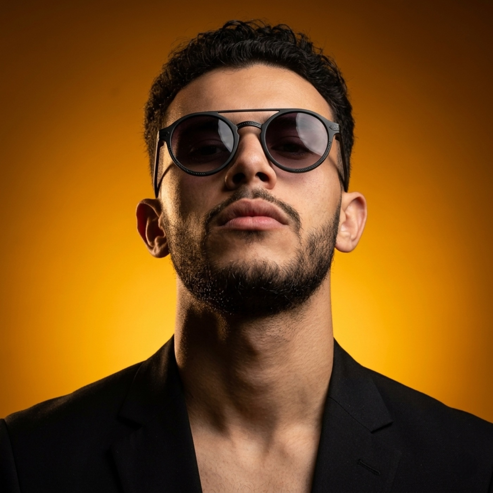
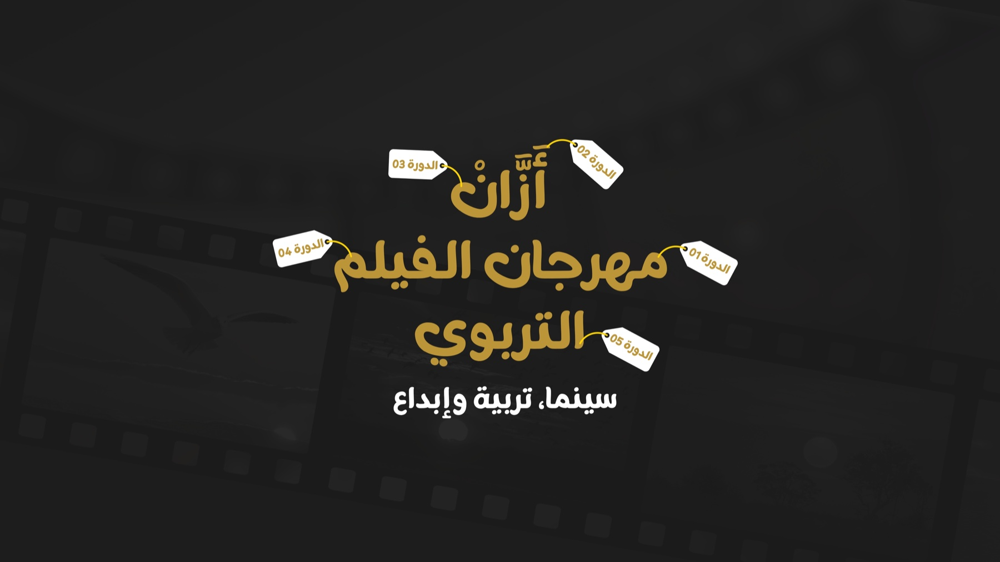
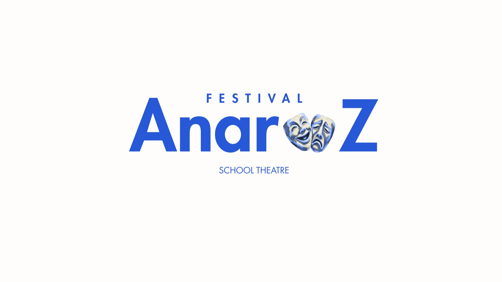
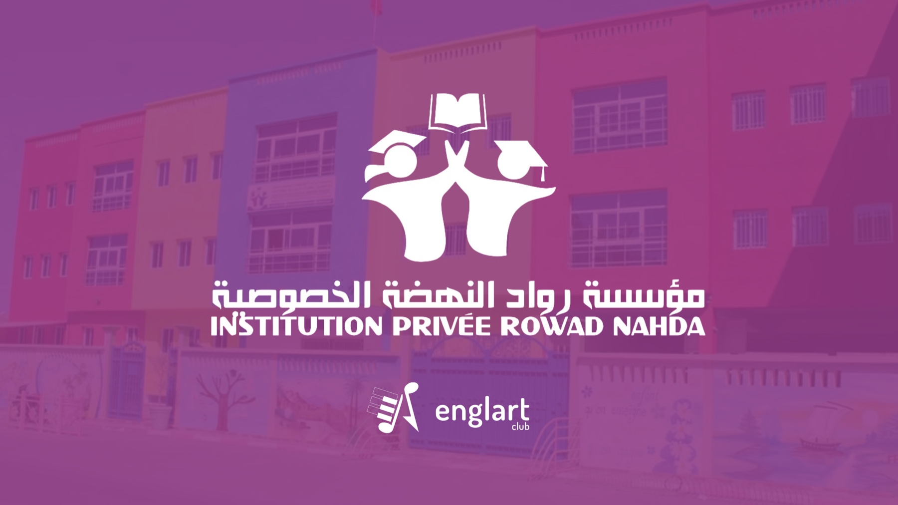

2021 — NOW
Freelance creative
Graphic designer · Photographer · Video editor
Building identities and multimedia content for clients and cultural events. More than 20 logo and visual identity projects completed.
Independent creative · Tiznit, Morocco
Graphic designer, photographer and video editor shaping visual identities and stories for culture, community and the people behind them.

I’m Zakaria, a freelance creative working across graphic design, photography and video. Since 2021, I’ve helped clients and local organizations find a clear visual voice—from event identities to photographs that hold on to a moment.
My work often lives where culture, education and community meet. I like bringing the pieces together: the visual idea, the image, and the details that make a story feel whole.
Creative work, event production
and community contribution.
Graphic designer · Photographer · Video editor
Building identities and multimedia content for clients and cultural events. More than 20 logo and visual identity projects completed.
Tiznit · Civic engagement programme
Supporting audiovisual production and the day-to-day logistics of a youth creative space, as part of a programme with Fondation Orient-Occident and France Volontaires.
El Haj Belaïd Music Institute · Tiznit
Managed room sound and cinema projection for film screenings.
Local associations · Tiznit
Volunteer photography, social media visuals, institutional identity work, photography workshops and documentation for local associations.
Documented projects across
culture, events and identity.



Visuals on this page are original typographic interpretations of the projects described in my CV.
From first sketch to final export, I move between the ideas and the tools that give them shape.
Arabic Native · English B2 · French B1
Graphic design, logo creation, visual identity, event communication, social media assets, art direction.
Event and product photography, retouching, colour grading, video editing, multimedia production.
Photoshop, Illustrator, Premiere Pro, After Effects, Lightroom, Canva, CapCut and OBS Studio.
Microsoft Word, Excel and PowerPoint. Languages: Arabic, English (B2) and French (B1).
Lycée Hassan II · Tiznit
Université Ibn Zohr · Agadir
Six-month vocational training · OFPPT
Moroccan Red Crescent · Kénitra
Maâref platform: photography basics, Canon equipment and food photography.